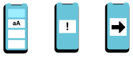

Title of the project: "UGO: System for improving accessibility at the
Madrid School of Design with 'Beacon' technology"
June 17, 2019
UGO is my end-of-master project in interaction design (Escuela Superior de
Diseño de Madrid, the academic year 2018 - 2019)
What is UGO?
UGO is a platform that helps people with learning disabilities be more
autonomous. UGO enables them to move independently inside of buildings.
A support person installs and configures the UGO app on their phone, taking into
account their unique needs. Once configured, the user will be able to go
anywhere inside a building with the aid of the app. Once chosen where to go, UGO
will show a series of simple instructions, accompanied by a visual and voice
aid.
To be able to ensure the orientation inside of buildings, UGO uses beacon
technology. This way the user can get real-time information of their position.
Designing for accessibility, why?
Next, I present the UX design process that I carried out to carry out the
project. If you just want to see the final result click
here
Understanding the problem
Identifying what we know, do not know, intuit and the limitations and barriers
What I want: to design a mobile application that helps people with
disabilities to orient themselves and move around buildings, through a
notification system as assistance.
Firstly, I did a little research on applications and different technologies that
already exist for the orientation and navigation of people with disabilities.
The applications are mostly aimed at blind users or users with mobility
problems, as well as being focused on the outside orientation.
After this research, it was necessary to understand everything I knew, what I
intuited and the limitations and barriers present on the subject
What I know:
Technology as an advantage for accessibility the different functionalities
that beacons can offer (interaction and navigation)
What I intuit:
Focusing on a single group with a specific disability.
It is interesting to focus on users with intellectual disabilities.
There is a need for greater autonomy for people with disabilities when it
comes to orienting themselves in spaces.
Designing for a few with very specific and special needs is designing for
many.
These users use technology daily.
The possible extrapolation and creation of a system that can be extended to
more users with other disabilities.
What I know:
The needs of users in this situation.
Types of interaction and interface language according to the specific needs
of the users.
Barriers and limitations:
Meet and talk with potential users and related professionals.
Narrow down the group of users with similar necessities.
Investigation method
Semi-Structured interviews
One of the key parts for the development of the project was getting contact with
specialists in the field and with users. In this case, I was lucky enough to be
able to meet with professionals from two organizations CEAPAT or “Centro
de Referencia Estatal de Autonomía Personal y Ayudas Técnicas” ("State Reference
Center for Personal Autonomy and Technical Assistance") and the ADEMO
Foundation, who very kindly agreed to answer my questions.
The research method used has therefore been to carry out two semi-directed
interviews , that is, with questions that serve to clear my doubts
and give rise to dialogue and thus be able to obtain as much information as
possible.
Interview conclusions
- Beacons technology is being implemented in some buildings in order
to make them more accessible, mainly focused on blind people.
- Cognitive accessibility is an interesting field of study.
It is important to understand that intellectual disability is a
spectrum in which people with very different accessibility needs
are found.
- The existence of a support person, who in most cases is in
charge of
configuring the different apps people with intellectual
disabilities use.
- Support persons are often highly mobile volunteers and do not
usually have much time to learn how to use highly complex setup
digital environments.
- People with cognitive disabilities sometimes have trouble learning
new interfaces.
- There is a real need for indoor guidance for users, as most
signage
does not take cognitive accessibility into account.
- Maps are not very effective, as most users lack temporal-spatial
orientation.
- It must be taken into account that the information cannot be complex
as many have attention problems.
- The most effective thing is to show images of the specific place,
not arrows or abstractions.
- It should be clear where the information point is. Looking for this
point is the first thing they do when arriving at a new place.
Easy read
A concept that I learned during these interviews is 'Easy read'. It is a way of
favouring cognitive accessibility, making information easier to understand,
something that benefits everyone.
Some 'Easy read' guidelines that will be included in the application are:
- Minimum font size 12 points
- Each line will have approximately 60 characters
- Do not use more than two fonts
- Preferential Arial or Helvetica (or the so-called non-serif
typography)
- Simple and direct language
- Do not abuse the conditional
- Use of the active voice
- Common words and short phrases
- Affirmative statements over negative sentences
- One idea per sentence
Personas
- A person with a cognitive disability
- 23 years old
- Can read but has comprehension problems
- He has myopia and wears glasses
- He goes every day to the occupational centre
- He wants to study something related to graphic design
- He likes cars a lot, and if he knows you, the first thing he
will ask you is what model you drive
- He's a big fan of science fiction series
- He uses WhatsApp with voice notes because it's easier that
way
- He likes to read the news on his phone
- Support person
- 35 years
- Lives in the south of Madrid
- She works in two occupational centres in which he takes
turns, in Moratalaz and in Arganda
- She is support person of 10 people
- She has a work and a personal phone
- She uses google calendar
- She likes going out with his friends for a beer on Fridays
after work
- She does not have a car and commutes everywhere. She uses
the time spent on public transport to answer emails.
Meeting the users
Redefining the design challenge
With all this in mind, the solution to the design challenge that was posed is
redefined in the following objectives:
Solving the difficulty that people with intellectual disabilities face trying to move
autonomously navigation in the interiors of buildings with a mobile application.
This application should be easy to understand and its interface should meet
their specific needs. This interface should be easy to understand and allow them
in the most effective and simple way to get to the place they want.
It all will be integrated into an environment for the support person to remotely
and easily configure the applications of the users they are responsible for.
Solution approach
How is all of this going to be possible?
The answer is by designing an ecosystem that allows making any place accessible
flexible enough to adapt to particular characteristics. Integration and access
to all places that implement the system.
This ecosystem integrates two environments and three different interfaces, one
for the end-user (the person with a disability), another for the support person
and the last one for the entity that would be in charge of managing the
ecosystem.
Configuration and administration panel:
The installation of the system will be carried out by professionals or a company
chosen by the competent authority through a public tender. What will be their
role?
The study of the space detecting key points of the specific building
The planning of the installation and placement of the beacons
Configuration of the aids (indications for the user) specific to the place (such
as 'Go to the information point' or 'Go to the bathroom')
Management of users, support persons and places that have the system
Analyzing data collected by the beacons (even in real-time)
The application
The application will take into account the two existing roles and their specific
needs.
The support person is in charge of:
Creating new users
Commissioning the user application
Assigning previously configured places and supports to a specific user
Configuring the interface of a specific user (font size, contrast, voice
help ...)
Creating user groups with similar characteristics and needs or that go
to the same places
Assigning previously configured locations and supports to a group of
users
User group interface configuration (font size, contrast, voice help ...)
The user needs:
List of places
List of supports and actions that you can take in a specific place
Feedback and automatic navigation

Intelligible interface and language tailored to specific user needs.
Effective contextual notification system. Simple directions easy to
understand and follow
Beacon technology
Beacons play a very important role in the project as they are the key to the
operation of navigation in the user application. Through triangulation and
proximity.
The beacons allow the application to recognize the building in which the user is
located and to automatically display the different places they can go to.
They also enable the automation of supports. That is, once the user wants to go
somewhere (for example, 'Go to the bathroom'), the app will give them 'feedback'
in real-time on the steps to follow. It will also be detected if the person is
lost (going too far from the right direction) and needs help.
Development
Information architecture
Wireframing
User testing
Once the wireframes were developed, I carried out a user test to check the
understanding of the application by the users, both the support person and the
person with a disability.
USERS: a support person, a professional from the ADEMO occupational
centre in Moratalaz.
Two end-users (two people with intellectual disabilities associated with the
ADEMO occupational centre in Moratalaz)
GOALS:
Identifying those elements that hinder user navigation.
Obtaining information from the test participants in order to make the relevant
changes to the prototype.
Checking that the information architecture of the prototype is the most
appropriate for the project.
CHALLENGES:
Identifying the elements that create difficulty for the majority of participants
Working on a small time frame
User Interface Design
Naming:
an acronym of the Spanish word'Ubicación' (Location in English) and 'Go'.
Pronounced in English it sounds like the call to action ‘You go’ and that when
pronounced in Spanish it reminds us of the name ‘Hugo’, which personifies it. It
is therefore an international name, friendly and easy to remember.
Graphic design
Four main colours have been used to help distinguish the different parts that
make up the app. Soft tones as it is an application that will be used for
continuous periods of time.
Typography
Support person: Roboto
User: Arial, following the 'Easy Read' guidelines
The app
Try the prototype
Next, I invite you to use your phone to try the prototype, both the support
person and the end-user interfaces. You can do it comfortably using the
following QR.
I want to highlight the work done in the development of this prototype since
it is about the design and ideation of a CSS system that includes the
different components and elements of the application.
Final thoughts
From this project I would like to highlight two things :
Professional growth: the development of the project has helped me to validate and consolidate the knowledge that I have acquired in my master degree. On this basis, I have also managed to broaden my knowledge in areas such as design for accessibility and in the languages of CSS and HTML.
Personal growth: if there is something that I take from this process, it is all I have learned from a world that until now felt very far away, the world of people with intellectual disabilities. And I can only feel grateful for the great opportunity I have had to work with them.
Finally, I would like to thank the people of the organizations that have helped me in the development of this project. To the professors of the Interactive Design Master, for their support, direction, help and advice. To the professionals of CEAPAT, to Paula, a worker of the ADEMO foundation, for getting involved and providing all the information and knowledge that were within her reach. Finally, to Toñi (a worker at the ADEMO Foundation occupational centre in Moratalaz), Juan Carlos and Jorge, who were very diligent to take the user test.